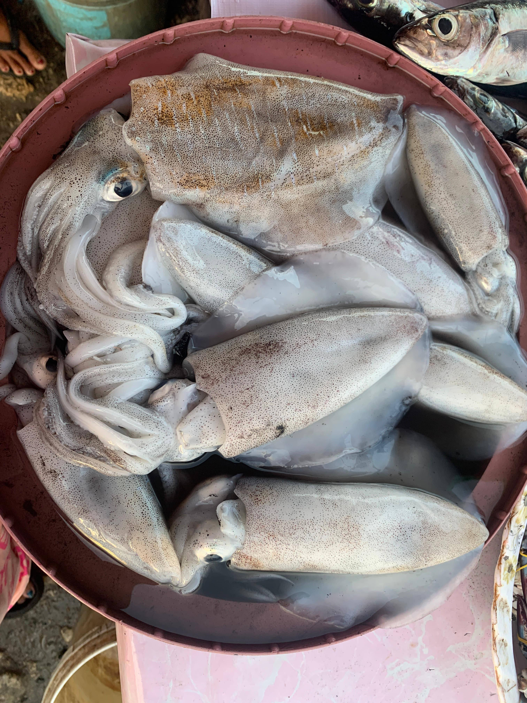
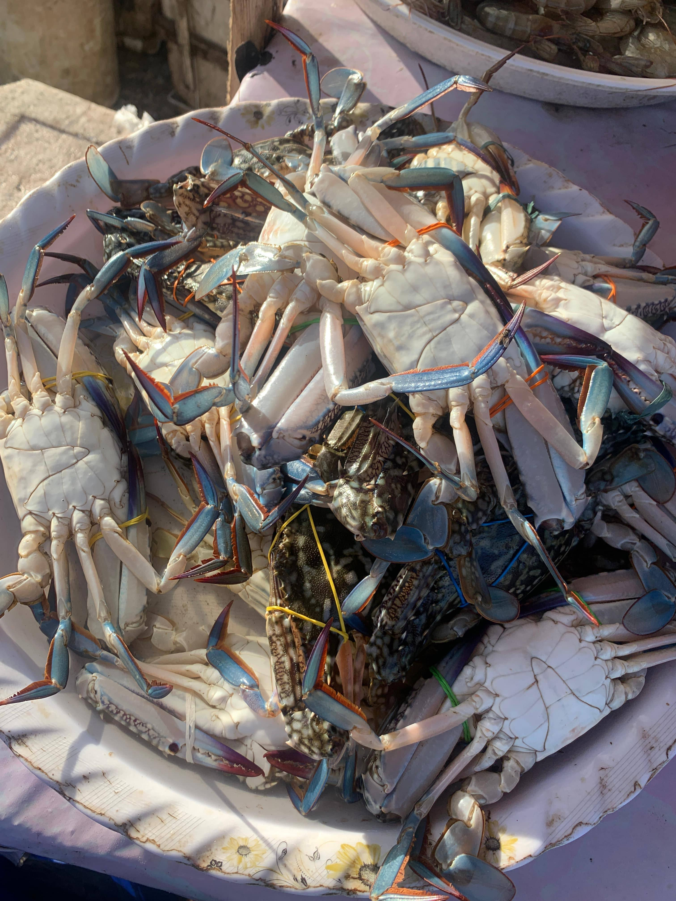

Our Fresh & Frozen Seafood

Fresh Fish
Locally sourced and delivered daily for maximum freshness.

Cephalopod
Perfectly cleaned and ready for your favorite recipes.

Shellfish
Sweet and tender, ideal for a variety of dishes.